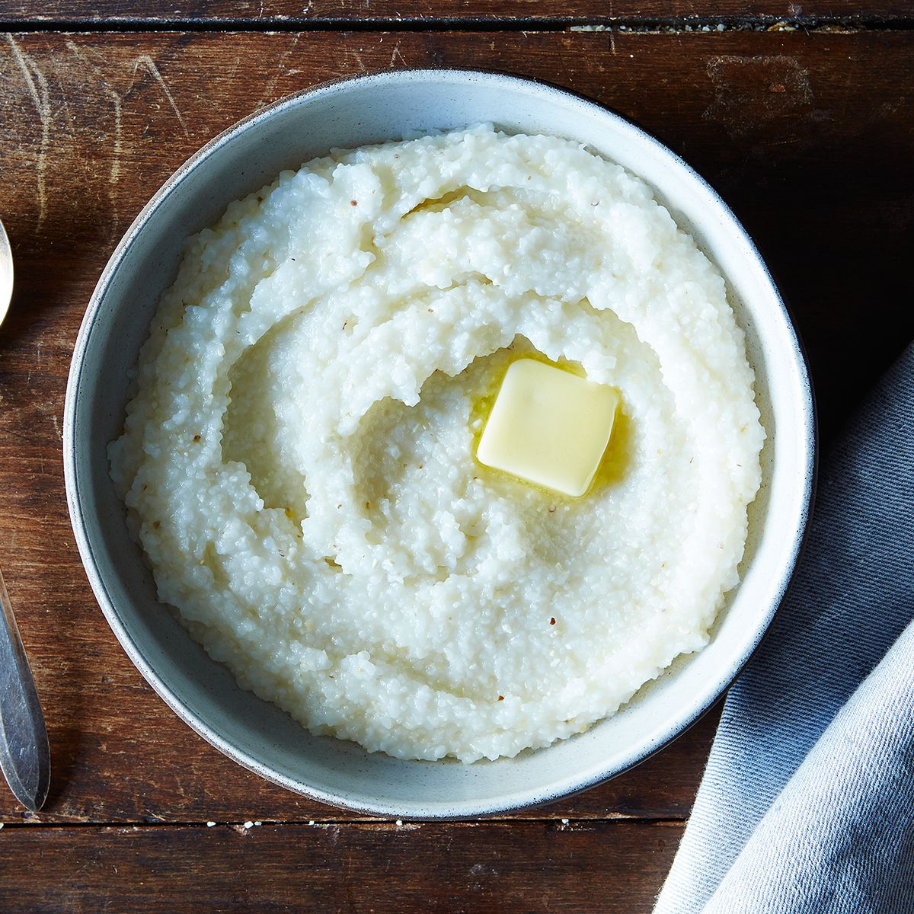

Grits

This cool recipe is for a protein-focused rendition of grits. It's gritty texture and great taste is very unique.
Grits are a quick and easy breakfast meal, with options for sweet or savory.
Ingredients
- 1 Instant Grits Packet
- 1/2 cup of Water
- 1-2 tbsp of Butter (Higher or lower depending on calorie prefrence)
- 6-10 slices of Pepperoni (Optional)
- 1 tsp of Honey (Optional)
Steps
- Tear open the Grits packet and pour into a medium sized bowl
- Pour 1/2 Cup of Water, using the Grits packet as a measuring cup
- Add half of the butter you want to use into the bowl
- Put the bowl into the microwave and microwave for 1 minute and 10 seconds
- When done, take it out of the microwave (It's Hot!), then add in the remaining Butter
- Add optional slices of Pepperoni and optional single tsp of Honey
- Eat!